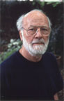
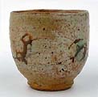
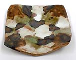
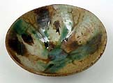
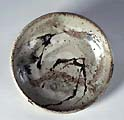
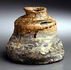
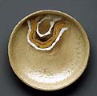
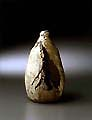

| Milton Moon
Australian Studio Potter.

Australian
studio potter and teacher Moon
Milton studied pottery at Sandison Pottery in Brisbane and
worked with Australian potter Harry Memmott in the late 1950s. He
was Senior Instructor in Pottery at Brisbane Technical College from
1962–68 and Head of the Pottery Department at the South Australian
School of Art from 1969–74. In 1966 he was the subject of
the monograph ‘Focus on Milton Moon’, by Dennis Pryor.
Moon has received numerous awards, including a Foundation Churchill
Fellowship in 1966 (representing Australia at the 1st World Craft
Congress in Montreaux, Switzerland), a Myer Foundation Geijutsu
Fellowship to study in Japan in 1974, an Advance Australia Foundation
Award in 1992 and a five year Australian Artists Creative Fellowship
in 1993. In 1984 he was made a member of the Order of Australia
for services to the arts. Moon is well known for his large wheel-thrown
stoneware platters and vessels inspired by the Australian landscape.

Artist's Statement
In
this, my seventy-ninth year, over fifty of which I have been a potter,
I remain concerned, if a little obsessed, with the challenge of
making pots, which although belonging to a ceramic tradition of
some eight thousand years or more, are undeniably and uniquely Australian.
With all my changes of expression this has remained constant.
The initial creative inspirations were drawn from the beauty of
the coastal areas of Eastern Australia and from the mountain areas
of the Great Dividing Range which stretch from North Queensland
to the extreme South of Victoria. But the most lasting inspiration
has come from the inland of Australia, more particularly from the
Gammon and Flinders Ranges and from the Olary Uplands of South Australia,
and more recently from the Pilbara and Kimberley areas of Western
Australia, where dating of the rock engravings place them as being
amongst the oldest marks left by human-kind anywhere in the world.

 All
parts of Australia are full of an ancient history stretching back
through time and which today, despite white settlement, somehow
still survives in legend and ritual. If it is the case that these
legends do now only exist, in some muted half-life there is still
the sense that they remain as a very powerful spirit presence. It
is impossible to ignore the feeling that this country re mains inhabited
by the past. For me it is also impossible not to creatively respond
to the echoes of the past, even if only through the somewhat vague
process of inspiration and distillation. All
parts of Australia are full of an ancient history stretching back
through time and which today, despite white settlement, somehow
still survives in legend and ritual. If it is the case that these
legends do now only exist, in some muted half-life there is still
the sense that they remain as a very powerful spirit presence. It
is impossible to ignore the feeling that this country re mains inhabited
by the past. For me it is also impossible not to creatively respond
to the echoes of the past, even if only through the somewhat vague
process of inspiration and distillation.
Whether one searches the horizons of these vast bare rugged lands
or views the far vistas from the great mountains of the High Country
the same spirit remains. To understand this spirit, even a little,
is a privilege but to try an express it is a compelling endeavor.
For me to be a truly Australian artist it is something that cannot
be ignored.
Images © Milton Moon.
Web: http://people.smartchat.net.au/~miltonmoon/.
More Artists of the Week
More Articles
|

{kind=link}
{kind=link}
{kind=link}
{kind=link}
{kind=link}
{kind=link}